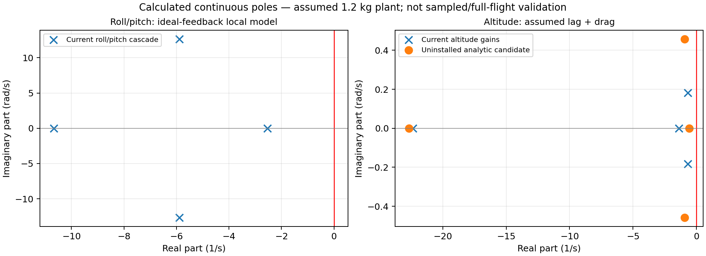

Offline mathematical reading view · Equations authored in LaTeX, rendered as native MathML · Markdown source
From propeller force to flight control
Nonlinear model · uncertainty · measured gains · RP2350 integration
Open the formatted reading view if your Markdown viewer shows raw equations.
Start with the illustrated mathematical paper. It derives the equations step by step, including coordinate frames, angular momentum, motor/battery coupling, all six gain calculations, Kalman covariance and real measurement procedures. Its editable source is main.tex. This page is the shorter navigation guide and worked introduction.
| Read next | What you will learn |
|---|---|
| 1. Forces | What each T means and where the translation equation comes from |
| 2. Rotation | Torque, inertia, angular momentum and nonlinear coupling |
| 3. Model and controllers | What remains nonlinear; what a transfer function can describe |
| 4. Uncertainty | Noise, bias, uncertainty of the mean and reference measurements |
| 5. Measurement plan | Apparatus, capture order and blank CSV worksheets |
| 6. Persistent calibration | Flash journal, boot verification, recalculation and USB commands |
| 7. Integration | Current simulation path versus future physical companion |
Status: No actual aircraft parameters have been newly measured. The full nonlinear equations are a model specification, not a claim that every additional aerodynamic/electrical term is already implemented in the simulator. Physical arming and ESC outputs remain disabled. This change has build evidence, not a new flight recording.
1. What is T?
A motor turns a propeller. The propeller accelerates air downward; the resulting aerodynamic reaction pushes the aircraft upward along that rotor's axis.
It is a force, not throttle percentage, torque, electrical power, or motor KV. For four parallel rotors pointing along body +z:
Forces add as vectors:
1.1 Choose coordinates before writing signs
Use world +z upward, body +x forward, +y left, +z upward. Let R map a vector expressed in body coordinates to world coordinates:
Let roll, pitch, yaw be , , , with
The third column of R tells us where the rotor axis points in the world:
Tilting redirects some thrust sideways. It does not create extra thrust.
1.2 Derive the equation from Newton's law
Define aircraft position and velocity in the world frame:
For constant mass m, linear momentum is m v:
Now list each force in the same frame:
| Force | World expression | Reason |
|---|---|---|
| Propeller thrust | R[0,0,T]ᵀ | Rotors are attached to the tilted body |
| Gravity | [0,0,−mg]ᵀ | World +z is upward |
| Assumed linear drag | −d v | Opposes velocity; d has units N·s/m |
| Other forces | f_disturbance | Wind/contact/unmodelled effects |
Substitute that list into Newton's law:
Every term has units of newtons because kg·m/s² = N. The vertical row is
At level stationary hover, , and :
If all four motors share equally:
Illustrative baseline only: gives and . For 30° roll and zero pitch at constant height:
That increase explains why tilted flight needs collective headroom. These are conditional calculations, not measured motor capabilities.
2. Why rotation has a cross product
2.1 Force away from the centre creates torque
For displacement from the centre of mass to rotor :
With and :
So roll and pitch come from unequal thrust and lever arms. Yaw additionally uses the rotors' aerodynamic reaction torques.
2.2 Inertia depends on where the mass is
For a small element dm at position ρ relative to the centre:
For example:
Units are kg·m². Moving the battery away from an axis increases inertia about that axis. Total mass alone therefore cannot determine J.
The body's angular velocity is in radians per second. These are body rotation rates; at general attitude they are not simply the three Euler-angle derivatives. Angular momentum in body coordinates is
2.3 Differentiate angular momentum in the world
Angular-momentum balance in the inertial frame is
Since H_W=R H_B, the product rule gives
Rotation kinematics gives
Therefore
Multiply by Rᵀ, use RᵀR=I, and express torque in body coordinates:
For a fixed rigid assembly J is constant, so substitute H_B=Jω:
Rearrange:
The cross term appears because the coordinates themselves rotate. It is not an arbitrary correction added to a scalar equation.
For principal axes :
The products , , couple the axes nonlinearly. The paper derives the inertia integral and each component before using them.
3. Keep the nonlinear model
The complete proposed state contains position, velocity, attitude quaternion, body rates, rotor speeds, effective motor currents and battery states:
Representative coupled equations are
The effective DC electrical model is an approximation to ESC/BLDC commutation; its parameters must be identified. Aerodynamic coefficients depend on propeller and inflow. Unknown coefficients stay symbolic. Adding unmeasured coefficients does not itself increase accuracy.
The existing native flight adapter still uses assumed first-order thrust lag and drag. The paper distinguishes those implemented assumptions from the richer proposed equations. It retains exact attitude rotation and explains optional rotor angular momentum consistently.
Why still calculate transfer functions?
A single global constant transfer function does not describe this nonlinear aircraft. Around a chosen equilibrium:
Then a local transfer function is
We use it to understand poles/gains near hover and retain the nonlinear equations for broader simulation. The paper keeps motor lag, drag, cascaded-loop coupling and higher-order characteristic polynomials when calculating local stability. It also explains why continuous poles alone do not prove sampled nonlinear stability.
4. Why not nonzero Ki and Kd everywhere?
The common controller form is
Every nonzero term changes dynamics and introduces tradeoffs. Six controller objects do not require eighteen nonzero coefficients.
| Loop | Current structure | Reason |
|---|---|---|
| Roll angle / pitch angle | P → body-rate target | Inner rate PI already supplies integral action |
| Roll rate / pitch rate | PI | Rejects persistent torque error; avoids raw gyro differentiation |
| Yaw rate | PI | Rate command and persistent torque rejection |
| Altitude | PID using estimated vertical speed | Height correction, steady offset rejection, velocity damping |
For independent measurement noise variance , a raw finite-difference derivative has
At , this can greatly amplify noise. Filtering reduces it but adds delay. More integral terms add states and can worsen saturation/windup. The paper derives existing gains, Routh conditions and a possible lag/drag-aware altitude design; it does not install speculative new gains.
Current reproducible scenario calculations: calculation script, full numerical results.

5. Standard deviation is not the whole error
A useful measurement model is
Here b is bias, while n_k describes fluctuation. Repeating a biased measurement many times can produce a very precise mean that is still wrong.
For independent readings:
- describes individual-reading scatter.
- describes uncertainty of the mean under the independence assumption.
- Instrument calibration, temperature, alignment and reference uncertainty add other contributions.
- A fixed aircraft mass is not fluctuating just because the scale does.
- “About 150 g” does not specify a distribution or standard deviation.
For correlated inputs with covariance :
Example for hover thrust per rotor:
A reference is a better characterized measurement, not absolute truth. Use a checked scale, calibrated voltage/current reference, known length target or suitable angular reference, and preserve their uncertainty with the comparison. The paper covers uniform/triangular bounds, resolution, correlations, drift and Allan variance, with explicitly invented teaching examples.
References: NIST Type A, NIST Type B.
6. How to measure what is missing
Follow the measurement plan and blank CSV worksheets. The paper gives full apparatus equations and uncertainty propagation.
| Unknown | Measurement | Core calculation |
|---|---|---|
| Total flying mass | Weigh complete aircraft repeatedly; check scale bias | Mean, scatter, reference uncertainty |
| Centre of mass | Reactions on two known supports for each axis | |
| Inertia | Bifilar pendulum for each axis; subtract fixture | |
| Static thrust | Secured thrust stand at several commands and voltages | from load cell; identify at hover |
| Motor lag and delay | Timestamp command step and thrust response | Fit , for |
| Reaction torque | Known lever arm and force | |
| Gyro noise/bias | Stationary log across temperature/configurations | Mean bias, variance, correlations, Allan plot |
| Accel bias/scale | ±x, ±y, ±z reference poses | Offset and scale from opposite-face means |
| Barometer/lidar | Compare against known heights and stationary logs | Offset, scale, residual variance, latency |
| Battery capacity | Controlled charger/discharger plus current log | |
| Camera/extrinsics | Calibration target and measured sensor transforms | Intrinsics, distortion, pose and reprojection residual |
| Communication delay | Timestamped sequence/receive/application records | Latency distribution, jitter and dropouts |
For a bifilar pendulum, is half the separation of the two strings and is the oscillation period. Measure several cycles, not a single period; use small oscillations and correct the fixture contribution. Each row in the paper includes assumptions and things that can bias the result.
7. Calibration in flash, and Kalman noise
Gyro calibration estimates the stationary mean and subtracts it:
The C implementation uses Welford's online mean/variance to avoid storing every sample. New flash storage saves validated fits, loads them after reboot and verifies the gyro again. Use the exact flash/boot guide for commands and failure behavior.
The common Kalman recursion is
Its gains depend on uncertainty models, sample timing and sensor quality. A large printed K is not automatically better than a small one.
The independent roll/pitch filters actually each have two states, angle and gyro bias:
The altitude filter has height and vertical speed:
Accelerometers measure specific force, so gravity removal requires attitude and sign conventions. At rest, magnitude is about 1g; in ideal free fall it approaches zero. The paper derives this before using vertical acceleration and explains periodic multi-rate gains. Saved sample variances are not yet automatically mapped into every estimator setting.
8. ROS 2 and Gazebo
Current simulation path
Native Gazebo physics/RGB → sensor model and common C++ mission core → ROS 2 DDS adapters/local IPC → host-compiled flight_controller.c → motor/thrust model → applied Gazebo link wrench.
The flight library runs production C math on the PC; it is not an RP2350 emulator. The recorded garden uses simulated local odometry and synthetic inertial/height measurements, with native camera pixels. The floor range is an analytical ray. The separately built standard C++ ROS graph is not claimed to have replaced every adapter in that recording.
Rebuild after C changes using tools/build/build_sitl.ps1. The launcher is tools/simulation/run_native_garden.ps1; see README for its command and environment.
New battery policy input for simulation
Publish a Float32 estimated SOC percentage to /qcopter/battery_soc_percent. The same C instance used by flight control sets flags published as UInt8 on /qcopter/battery_policy: bit 0 warning, bit 1 disarm latch.
In an already configured ROS 2 terminal, these are example commands:
ros2 topic pub --once /qcopter/battery_soc_percent std_msgs/msg/Float32 "{data: 35.0}"
ros2 topic echo /qcopter/battery_policy --qos-durability transient_local
At 20 or below, the mathematical motor demands are inhibited and the simulated aircraft can fall. The bridge does not invent a battery-discharge trace. This new topic path has not been exercised in a new flight.
Future physical companion
ROS mission → framed USB/UART commands → RP2350 parser → local 500 Hz loop. Actual physical transport framing, freshness, CRC, authority and acknowledgements remain unfinished. ROS uses radians; the C interface currently uses degrees. A slow mission setpoint stream must not determine the inner-loop period.
9. Requested battery behavior
| Estimated SOC | Behavior |
|---|---|
| Above 35% | Normal SOC policy |
| At/below 35%, above 20% | Warning |
| At/below 20% | Latched disarm, regardless of height |
There is no automatic battery landing. Once set, disarm does not clear on an SOC rebound. An explicit disarmed reset starts a new policy session. Critical configured external cell/BMS alerts also latch disarm.
Notifications currently mean USB status and the simulation ROS flags. Handheld LoRa delivery, real voltage/current acquisition and physical ESC inhibition remain unfinished. A voltage divider alone cannot measure discharge current. SOC is uncertain; its threshold crossing is not proof of exact remaining capacity. With motors stopped in air, thrust decays and the aircraft falls—the paper derives that case too.